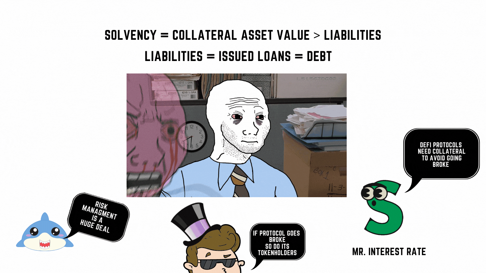

Lending is a fundamental financial mechanism in finance and DeFi. Lending helps take excess capital from savers and allocates it to borrowers, putting the funds to productive use. This helps create economic growth while generating a return for savers. It's also used for hedging and mitigating risk. On the other hand, lending creates debt, which, if not properly managed, can cause instability to cascade through connected markets, leading to economic and market contractions. These issues are magnified in DeFi because networks are interdependent and open to anyone.
DeFi lending markets allow users to become borrowers and lenders in a decentralized way without giving up custody of their funds. It is more efficient since it enables permissionless and programmatic access to capital without a credit check. Being on Ethereum means that any program can access these markets, providing a money lego around lending. Using a peer to contract pattern, lenders and borrowers can interact with the contract and simplify negotiating loan terms or managing counterparty risk themselves. This lowers frictions costs and while being scalable.
Since DeFi protocols are open and pseudonymous, uncollateralized loans are not possible. You have to put up assets to get funds. Providing collateral ensures the counterparty cannot steal the funds or default on a loan. Due to the volatility risk of crypto assets used as collateral, over-collateralization is required. Issuing debt via over-collateralization is a typical pattern in DeFi. The pattern can also help limit the amount of leverage, and control risk for a protocol since assets need to be greater than liabilities.

The level of over-collateralization is represented by the loan-to-collateral ratio stated by the protocol. The loan-to-collateral ratio is the percentage you can borrow of an asset relative to the collateral deposited. Other names for the same idea include collateral factor, collateral ratio, cFactor or cRatio. Since we cannot borrow more than we deposit, the cFactor is always below 100%. Depending on the quality of the asset, the collateralization ratio is set.

Why collateral?
The ability to add collateral and adjust a token's supply allows for issuing a debt token backed by collateral. This debt token can represent a utility token like a lending market position from Compound.finance or Aave. For example, in Compound Finance, a DAI debt token would be cDAI, while in Aave aDAI. If DAI's collateral factor is 75%, then with $100 worth of collateral, you can borrow 75 DAI. Other DeFi 101 lending concepts like the importance of price oracles to update price can be found here.
Why would anyone take out an over collateralized loan? Why not just sell the assets? One reason is to avoid or delay paying capital gains taxes when selling. If the user has excess capital, the user can earn interest on their stablecoin. Or to increase their liquidity without having to sell their assets and only having to pay the interest. This liquidity can be used as leverage to short an asset or to fund an unexpected expense.
A user can profit by leveraging a long position or shorting on an asset through lending markets. Going long means expecting the asset's price to appreciate. If the user expects ETH to go up in value, they can deposit their ETH to borrow USDC. Then use USDC to buy more ETH. The user gets exposure to more ETH minus the interest rate. Say the collateral factor is 50% on a deposit of $1000 worth of ETH. The borrower receives 500 USDC and then can buy more ETH. So they can leverage themselves to $1,500 worth of ETH. To turn a profit, the appreciation of ETH should exceed the interest and gas fees required to pay back the loan.
Going short means expecting the asset will lose value in price. If the user expects ETH to depreciate, they can deposit USDC to borrow ETH. Then sell the ETH and repurchase it later at a lower price, making a profit in the difference. Say ETH is at $1000 when the user sells it. Later, they buy the asset back at $300. They get to pocket $700 minus the interest payment and gas fees.
Liquidation involves a user's position being closed to pay the debt incurred. This happens if the collateral's value drops below the acceptable collateral ratio. Lending protocols often use an Oracle service like ChainLink and the price feed of a major exchange like Uniswap to provide real-time data about a collateral's value.
Since smart contracts cannot act without being called, liquidation occurs by offering incentives to an external entity called a "keeper". The keeper can liquidate the position and keep a percentage fee. Then, the collateral is auctioned off or via a decentralized exchange at market price.
In some protocols, everything is auctioned off. In others, the remaining collateral is left in the original contract. An example can be if the collateralization ratio is 200% and the user only placed the bare minimum. If the asset drops 1%, the protocol will liquidate 2% of the collateral. Since liquidation is costly, some protocols allow users to add additional collateral if needed, similar to a margin call. It is wise to add a margin of safety in addition to the collateral ratio.
Applications: Compound Finance and Aave
An application of lending markets are money markets. Within DeFi open-source algorithmic money market protocols allow anyone to borrow or lend cryptocurrency assets by only providing collateral. These lending markets connect lenders who wish to earn interest and borrowers who want to borrow for various reasons and pay interest. Users can provide assets with d liquidity like ETH, WITH, DAI, USDT, USDC, LINK, etc.
The two leading platforms are Compound.finance and Aave (ghost in Finnish). Explained in the links, Compound Finance and Aave work by using lending pools. A lending pool locks up capital and generates an algorithmically determined interest rate based on supply and demand. You can learn how to use Aave and Compound.
Lending requires borrowers and lenders. Borrowers pay interest while lenders earn interest. Whether you borrow or lend, you must lock up capital into a lending pool inside a contract. In return, you earn a debt token, in Compound's case a cToken, derived from the asset in question. DAI, you get cDAI, BAT renders cBAT and so on. This token accrues interest over time and can be traded or used as collateral in other protocols. For the lender to unlock their collateral, they must pay the interest accrued plus the collateral. For both Aave and Compound, there is no time period to close the loan.
Lending can occur with variable rate interest based on market demand or fixed interest rates. Variable interest rates adjust due to the demand and supply for the asset in question. The key to note is that the borrow interest rate is always higher than the supply rate.
Lending protocols operate in real-time. Rates are adjusted, and interest is accrued every new Ethereum block. Interest is typically accrued to the debt token or accounts tied to the lending pool. Aave lets users redirect their stream of interest to other contracts. This allows for interesting applications where pools of money can be programmatically deployed to earn interest. One can seperate the marketing logic form the interest earning logic.
An example of this can be PoolTogether which is a no loss lottery where the winner wins the interest accumulated and doesn't sacrifice the principal. A similar project could focus on the marketing of new application of lending pools, like no loss poker, and leverage Aave's money lego to deal with the interest.
Aave offers a stable interest rate, which means it's fixed for a short term and can change depending on borrowing and lending dynamics of the pool. Other platforms offer fixed interest rates, like Notional, 88mph and Barnbridge.
Typically, the longer the loan, the higher the risk, the higher the interest rate. On Ethereum, we measure time in blocks. What if we went in reverse? If a loan and a position could be executed in the same block, what happens? We get flash loans!
DeFi allows the creation of something called Flash Loans. Introduced by Aave, flash loans are the first uncollateralized loans that can be accessed in a permissionless way. This means that anyone anywhere can access large sums of capital. They are explained here.
Flash Loans only have one condition: Payback the loan within 1 Ethereum block. Since all protocols share the same database on Ethereum, flash loans can interact with various protocols in one block to find opportunities. The loan only goes through if the transaction results in the loan being repaid. If not, the entire transaction reverts, like it was never sent!
A cool application of Flash Loans is the ability to do Flash Swaps. Learn how to create Flash Swaps with Infura here. This can be used to hedge against liquidation risk by swapping a volatile asset into a stable asset!
With DeFi Lending Markets, there is zero counterparty risk. However, smart contract risk always exists. Duration risk comes in borrowers being hit with spiking variable borrowing APY rates if they are not paying attention. This can cause a user to get liquidated by having to repay more than expected. When hedging, there is the risk of the trade going the other way.